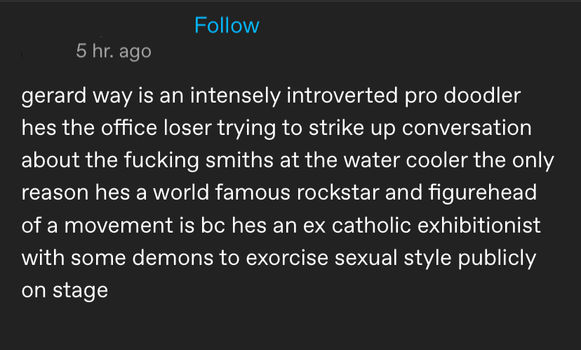
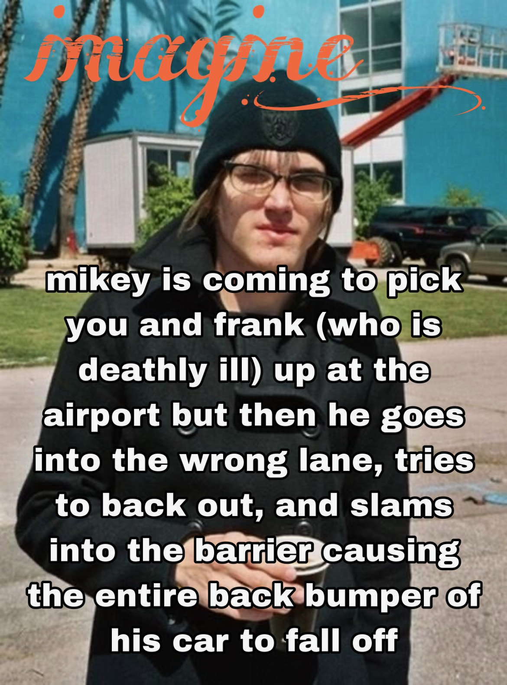
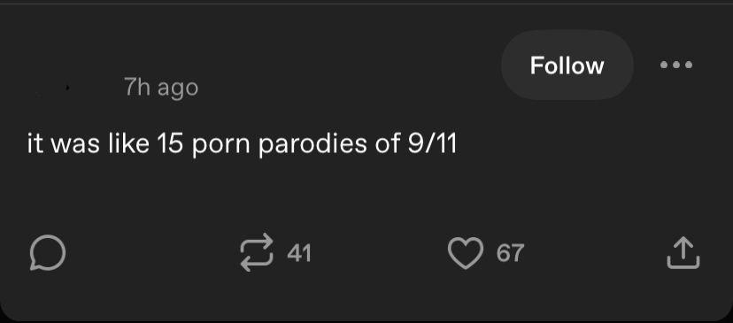
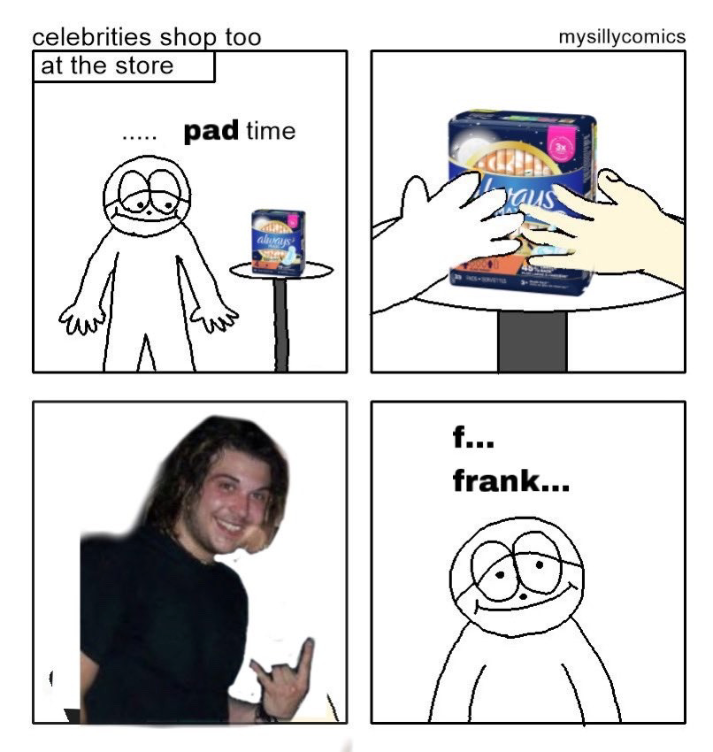
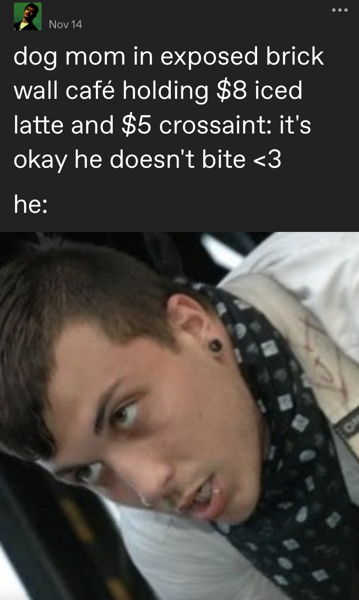
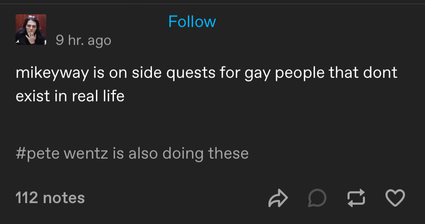
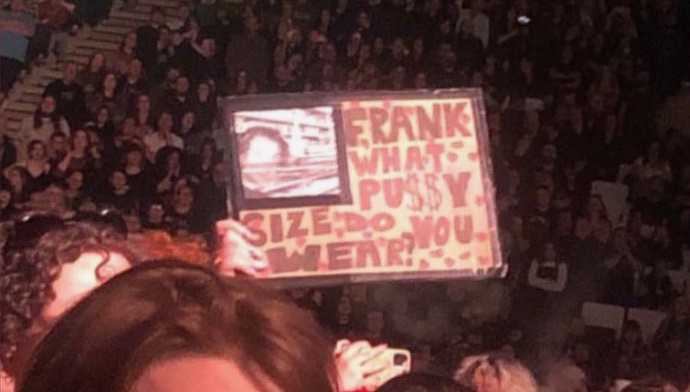
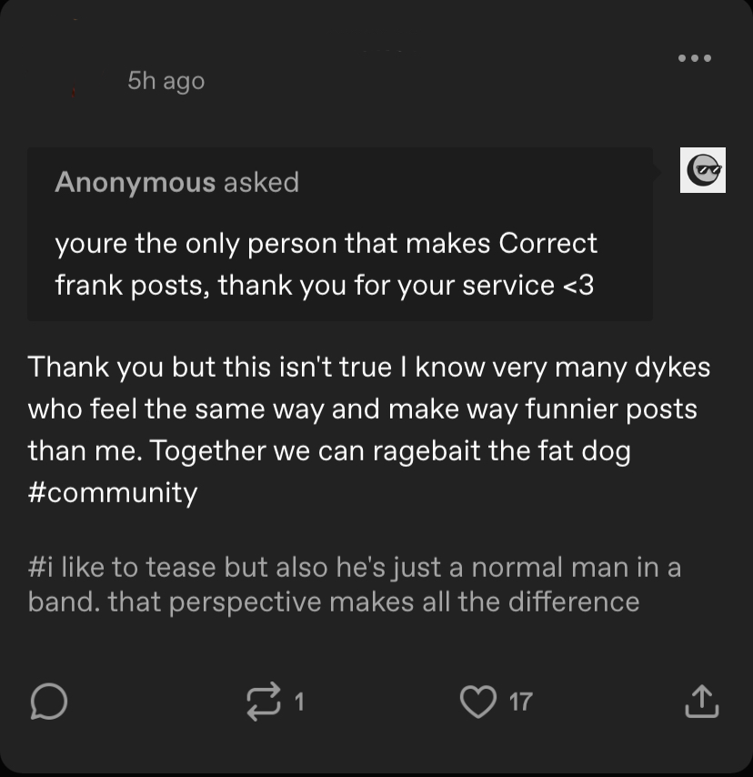
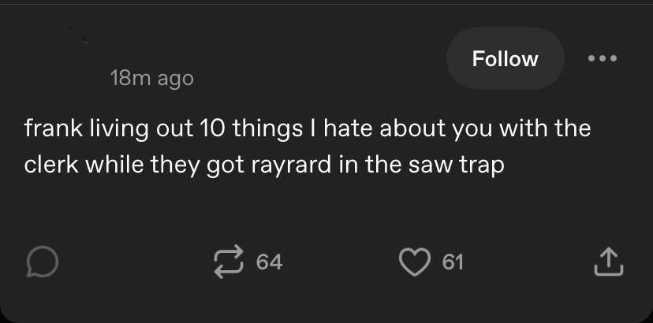

For all of its popular associations with sadness and existential angst, the main emotional register that emo fans operate in is actually humor. As is the case with most fandoms, emo fans online devote a huge portion of their everyday fandom practice toward making each other laugh. The primary text (the band) becomes a remix-able material that fans break up, collage, and iterate on through the creation of infinite secondary texts (memes, fan art, lore, fanfiction, etc.) which allow fans to build insider knowledge and connect with one another.
In the vast majority of existing work on emo, I feel that the relationship between humor and desire has been under-explored. I think that this is in part due to the general philosophy of girl-oriented fan studies of the past decade, which has pushed to legitimize women’s interests and fan behaviors as a “serious” form of cultural production. The general methodology here has been to take silly things and show that they’re serious, actually rather than take serious topics (i.e. queer identity and mental health) and make them silly, which is more the way that emo operates. Obviously, these efforts toward reclaiming stigmatized fangirl behaviors are necessary in a cultural climate that infantilizes, denigrates, and pathologizes femme-coded activities, and I situate my own work in this space as well. Fandom is already associated with uselessness and non-productivity, so when women participate in fandom, their “non-productive” fan behavior folds itself into larger cultural fears about women rejecting traditional life-ways predicated on motherhood and reproduction. Whereas the male-nerd archetype has largely formalized into something that people can make sense of, adult feminine fandom remains culturally illegible. How can a woman be a good woman if she deigns to love something that’s not productive, like her career, motherhood, or self-improvement? This line of thought begs the question: what does it even mean to be an adult woman fan in the twenty-first century?
But this question is far beyond the scope of our project here. To bring us back around to the topic of desire, I want to stress here that feminine fandom is funny. Its economy relies on jokes and memes and bits. On any average day, more than anything else, people are just trying to make each other laugh. (Hence the humor embedded in all of the social media posts you see here.) It’s silliness is also in many ways what separates it from more masculine-coded fandom spaces. While the male-nerd stereotype takes himself seriously, the fangirl is ironic, playful, and self-deprecating. She screams in all-caps and makes “crack edit” mashups of band footage, TikToks, and deep-lore fandom jokes that have circulated among girls on Tumblr since 2013.
I mention all of this here because in a queer and femme-coded fan context like emo, desire constantly rubs up against two other emotions: humor and shame. Historically, women have faced massive and constant scrutiny over the way that they have loved things. Perhaps most notoriously, doctors in the 1960s attempted to create professional diagnostic criteria for “Beatlemania” in an attempt to control how young women could engage with their favorite band. The love that these girls felt for the Beatles was so intense, so scary, and so disruptive to established gender norms of the time that their passion needed to be restricted. Even though a clinical Beatlemania diagnosis never materialized, the culture had another way to pressure girls into behaving the way that they wanted them to: shame.
Growing up, I always felt like the way I loved my favorite bands was wrong. To be a real rock fan, I needed to be a tough boy going to punk shows in the bad part of town (where my body was a target for violence). I needed to be shredding guitar riffs in a band with my friends (no one I knew played an instrument). I was supposed to love only the music, and everything else was off limits.
But I couldn’t help it. I loved so much. I loved the music, the edgy way that bands dressed, the things they did with each other onstage, the jokes they made in interviews, the jokes other girls made online about the bands, the way I could replicate their “whiny” voices when I was screaming along to their music in my car. The only place I felt like I could express my love to its fullest extent was on Tumblr, because none of the boys who would make fun of my embarrassing fangirl behaviors knew what Tumblr was. Bandom Tumblr was a digital island ruled by teen girls and queers, hidden from the judgmental gaze of the ever-present male music critic, where we could make our own rules about how we loved rock music.
In making this project, I’m constantly torn between my need to protect this special underground community and my overwhelming desire to share its splendor with everyone. I show screenshots of posts but redact the usernames, I blur people’s faces but still feel bad about showing them at all, I waffle for an hour over whether or not to include a fanfic synopsis that I know is serious in some ways and a complete joke in others. (But what if no one gets the joke, or sees that fanfic is a speculative exercise that in practice really has very little to do with the people it’s theoretically about, and including the post at all just ends up being a total embarrassment for me and the person who wrote it?) Fandom for me and my friends has long been an exercise in navigating embarrassment, and humor is a great way to diffuse some of the tension that I feel about loving something shameful so much. But I also don’t think that loving like this should be shameful, and I take it seriously, and I want to celebrate it here. It’s a constant back and forth.
A few days ago, I was flying into the Newark airport when our plane almost collided with a FedEx cargo jet landing on an intersecting runway. The complete absurdity of an airport having intersecting runways aside, I didn’t actually realize this was such a big deal until I saw a bunch of news articles go out after the fact about a near-collision at the Newark airport and was like “huh, I did think it was weird how close we were to that FedEx plane when we were landing the other day. Oh, wait they’re talking about my flight.” Anyway, the reason I mention this here is because the song I was listening to during this near collision was Death Spells’ “Fantastic Bastards” which, if you’ve hung around in particular emo fan spaces long enough, you might have heard a few rumors about. I’m not here to confirm or deny these rumors, which ultimately I am not all that invested in personally, but the gist is that some people think this song might be about a certain relationship between two emo musicians which may or may not have happened. Again, I am not here to make impossible truth statements about these things, but regardless of what the song is actually about, the rumors are enough to make me chuckle every time I listen to it or any of the other rumored songs on the album. Whether or not the narrative that fans have constructed around these songs is even true at all, it is all very silly and fun to indulge in sometimes. And as I watched the FedEx cargo jet cross underneath us unnervingly close through my little airplane window, my only thought was “what an absolutely stupid fucking song to die in a plane crash to.”
My life didn’t flash before my eyes so much as my humiliating imminent death, a parallel reality in which I died at age twenty seven in a fiery midair explosion to a fucking F*****d song. Flying into New Jersey, no less. (I understand that the roundabout way I’m describing a lot of this isn’t going to make any sense unless you’re plugged-in enough to emo fandom bullshit to know what I’m talking about, but unfortunately this is the most I can bring myself to explain here.) I’ve spent the past few days feeling like I should probably rethink some things about my life. I would prefer to not die giggling at a song about two guys I do not know who like, maybe did hand stuff twenty years ago. Despite the anxiety that I think I probably should feel about all of this, my brush with death is funny to me in the way that thirty year old women making self-aware shipping jokes on Tumblr like they’re fourteen again is funny. The feelings are absurd, it’s ridiculous that an adult woman would even be in a situation like this, and the whole thing is ultimately so embarrassing that the only thing I can bring myself to do is laugh about it. What soundtrack should an adult woman die to? Beach House? Joan Didion’s The White Album on audiobook? I don’t know.
The point I want to make here is that emo, desire, and shame are all tangled up in such a mess that it’s hard to even look at any of it directly. (Especially when you’re talking to a public audience.) In femme-coded fan spaces, desire often produces shame because of the way that feminine fan practices have been belittled by outside observers for so long. The broad stigmatization of femme-coded fan practices makes engaging with desire in fandom cripplingly embarrassing, which is even more potent in rock spaces where women have had to fight for their own legitimacy in a male-dominated scene. It’s hard to want to talk about musicians being hot when the rest of the group thinks that sexuality is the only way you’re capable of engaging with rock music.
And finally: humor. Humor certainly goes a long way to diffuse some of the tension when all of this becomes a little too much, but it also serves an important communicative role in queer and femme-coded fan spaces.
The site linked below here is a celebration of how weird desire gets when you’re queer, as told through the context of contemporary My Chemical Romance fandom. In moments of desperation (i.e. you just saw Gerard Way walk out onstage in a tiny miniskirt), humor becomes the most effective way to communicate the absolute sheer intensity of your feelings. I made this site to archive, as the page’s title says, what dykes on Tumblr post during an MCR livestream. For those who have never participated in this uniquely social-media-era phenomenon before, I should also explain that these are not official livestreams, but rather some random fan on (usually) Instagram live streaming the show from their phone for other fans around the world to experience in real-time. The streams are of shitty quality, they cut out at the worst possible times, and you can usually hear fans near the phone shouting along off-key more than the band itself, but these moments are cherished bonding experiences in modern fan spaces. People reminisce for years after about where they were as they watched the band play the first real show of their post-breakup era in Europe (having an MCR-induced mental breakdown at my desk job) or the night Gerard walked out onstage in a vintage cheerleader dress (the one livestream from Swarm tour that I missed, and it haunts me to this day).
I chose to archive Tumblr posts specifically because (1) I admittedly have a personal bias toward Tumblr, which is the best social media site of the modern era, and (2) because Tumblr niche-ness and anonymity allow people to REALLY let loose in a way that they just don’t on more public-facing platforms. As someone who spends a lot of their time scrubbing through different social media platforms and old forums saving emo posts, I can confidently say that all of the most unhinged (and my favorite) stuff comes from Tumblr. Maybe it’s just that I’m more plugged into Tumblr’s wavelength than say, TikTok’s, but you just don’t see people posting stuff like like “her limp wrist + ghoulish mannerisms have bewitched me dick + soul” about Gerard anywhere else. Someone would get mad at you for misgendering Gerard, or for appropriating dick-having culture when you’re actually a cis lesbian or something. (I’ve seen both of these things happen. Often.)
Basically, what dykes post on tumblr during an mcr livestream is an attempt to capture the reality that sometimes the lesbian desire for Gerard Way in a miniskirt gets so intense that the only way you can possibly communicate it is through hyperbolic, absurdist jokes that other people going through the same dire thing as you will understand. Humor is a strong affect when you implement it effectively, and that goes a very long way in fan communication. But in the end, maybe it’s a lot simpler than all of this. Maybe girls and queers are just better at playing around with what everyone else takes so seriously.
Explore the site here.